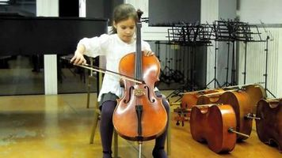
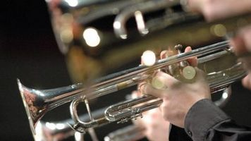
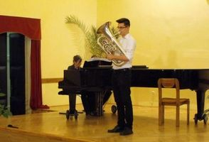

Hegedű
A hegedű a vonós hangszerek legmagasabb hangolású, méretre legkisebb tagja, 4 db, kvint távolságra hangolt húrral. A legmélyebb húr (ami tulajdonképpen a hegedűn megszólaltatható legmélyebb hang) a kis G, ezt követi az egyvonalas D-, egyvonalas A-, illetve a kétvonalas E-húr. A vonós hangszerek között a legnépszerűbb hangszer, a szimfonikus zenekarokban a legnagyobb számban van jelen. A hangszert jellemzi a virtuóz játékmód és a széles dinamikai skála. A hegedű tanulása a különböző méretben elkészített hangszereknek hála nagyon korán, már akár óvodás korban is elkezdhető.
Cselló
A cselló (gordonka, kisbőgő) egy nagy hangterjedelmű, basszus fekvésű vonós hangszer, mely a család középső tagja. Ez a hangszer is négy húros. A legmélyebb húr a C, melyet a G, a D és az A húrok követnek. A hegedűvel és a brácsával ellentétben, e hangszert játék közben a földre kell támasztani és ülve játszani rajta. Mély hangjai kitűnően betöltik a zenekari basszusszólam funkcióját. A magas regisztere pedig képessé teszi vezető dallamok játszására is. A cselló a hegedű után a legdallamosabb vonós hangszer, amelynek hangja a legközelebb áll az emberi hanghoz. Mivel a tanulóhangszerek gyakran készülnek kisebb méretben, így ez a hangszer is könnyen tanulható kicsiknek.
Fuvola
A fuvola aerofon hangszer, az ajaksípos hangszerek közé tartozik. Hangképzés szempontjából a legegyszerűbb hangszerek egyike, valódi fúvókája nincs is, a hangszert a játékos ajkai által a fejrészen lévő befúvónyílásra irányított levegőáram szólaltatja meg. A fuvola csöve játék közben a fúvás irányára merőlegesen, oldalsó helyzetben áll, ezért harántfuvolának is nevezik. A különböző hangmagasságokat hanglyukakkal, billentyűzet segítségével lehet rajta képezni. A fuvolát fúvástechnikája, zenekarbeli szerepe alapján a fafúvós hangszerek közé sorolják annak ellenére, hogy napjainkban már leggyakrabban fémből készül. A legmozgékonyabb hangú fúvós hangszer.
Oboa
Az oboa (francia hautbois = 'erős hangú fa') a nádnyelves hangszerek családjába tartozik, kettős nádnyelves fúvókával megszólaltatott fúvós hangszer. Kónikus, tehát kúpos furatú, fából készült, billentyűzettel ellátott teste van.
Klarinét
A klarinét egyszerű nádnyelves fúvókával működő fúvós hangszer. A szimfonikus és fúvós zenekarok, a dzsessz, klezmer, cigányzenei és népzenei együttesek fontos hangszere. Hangterjedelme az összes fúvós hangszer között a legnagyobb, közel négy oktáv, legmélyebb hangja e, legmagasabb hangja c''''.A nádnyelves hangszerek közül a klarinétnak van a legrégibb múltja. A nádból készült egyszerű idioglott pásztorsípok (vagyis ahol a sípnyelv a test anyagából van hasítva, pl. a magyar nádduda) működési elvük alapján rokoníthatók vele, hiszen ezek is egynyelves nádsíppal és hengeres „furattal” rendelkeznek.
További információkZongora
A zongora billentyűs, polifón húros hangszer. Billentyűsorral összeköttetésben álló, kis kalapácsokkal megütött, hangszekrényben kifeszített fémhúrok adják a zenei hangot. Hangképzése mechanikus, alapszintű kezelése a többi hangszerhez képest egyszerű, viszonylag könnyen és gyorsan elsajátítható. Népszerűségének oka az is, hogy egy játékos több szólamot képes egyidejűleg megszólaltatni rajta, így zenekari vagy kórusműveket, de akár operákat is könnyen előadhatunk segítségével. Ilyen szempontból a zeneszerzők és karmesterek fontos segédeszköze. Ugyanakkor hangolásának szükségszerűen kompromisszumos mivolta nem mindig teszi lehetővé a tiszta intonációt. Sokan ezért nem is tekintették teljes értékű hangszernek, például Kodály Zoltán sem.
Trombita
A trombita a nyugati zenében használt tölcséres fúvókájú, más néven rézfúvós hangszerek közül a legmagasabb hangú. Hangfekvése a kürt, a harsona és a tuba fölött van. Tágabb értelemben trombitának nevezünk minden olyan trombitaszerűen megszólaltatott egzotikus vagy népi fúvós hangszert, amelynek furata a trombitáéhoz hasonlóan szűk, túlnyomórészt hengerszerű. A trombita egy változó keresztmetszetű, többszörösen meghajlított csőből áll, melynek egyik végén helyezkedik el a fúvóka, a másik vége tölcsérszerűen kiszélesedik. Anyaga sárgaréz, vagy más rézötvözet. A cső hosszának nagy részében cilindrikus, tehát azonos keresztmetszetű, menzúrája szűk, ennek köszönhetően fényes, érces a hangja. A tölcséres rész segít a hang sugárzásában, ugyanakkor a fafúvósoktól eltérően a hang képzésében is részt vesz.
Tenorkürt
A tenorkürt a tölcséres fúvókájú, más néven rézfúvós hangszerek közé tartozik. Hangfekvése megegyezik a tenorharsonáéval, a trombita és a tuba között van.A tenorkürt egy változó keresztmetszetű, többszörösen meghajlított csőből áll, melynek egyik végén helyezkedik el a fúvóka, a másik vége tölcsérszerűen kiszélesedik. Anyaga sárgaréz, vagy más rézötvözet. Méretezése a szárnykürthöz hasonló, de annál hangolásának arányában nagyobb. A jelzőkürtök családjába tartozik, szemben a baritonkürttel, amely inkább a tubák közé sorolható. Készülhet a trombitához hasonlóan vízszintes, a tubákhoz hasonlóan függőleges, vagy ovális formában. Három nyomó-, vagy forgószeleppel rendelkezik. Ezek más szelepes rézfúvós hangszerhez hasonlóan különböző hosszúságú csődarabokat iktatnak be a csőrezonátorba, ezzel áthangolva azt, hogy minden hang megszólaltatható legyen.